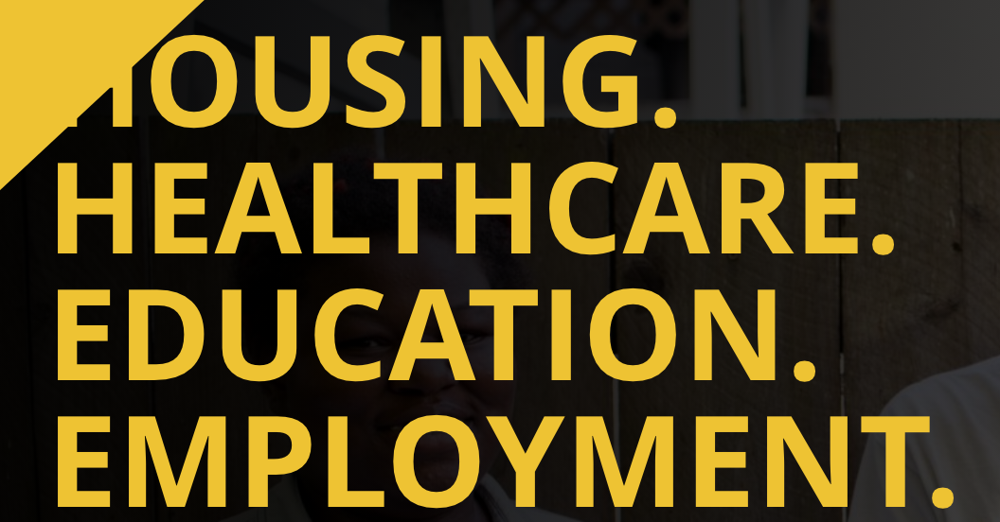
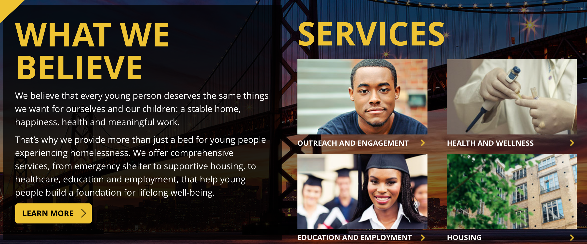

ARTICLE SECTION: Youth Homelessness
According to CSH, "In San Francisco, it is estimated that five to ten percent of the approximately 80,000 young people aged 16 to 24 are at an elevated risk for unemployment, involvement with the criminal justice system, poverty, and homelessness.
Finding housing that is both affordable and safe is one of the top concerns for San Francisco’s Transitional Age Youth (or TAY, which refers to unaccompanied young people aged 18 to 24 years).
TAY is a population that requires a unique approach to the delivery of housing and services.There are over 1,400 homeless Transitional Age Youth in San Francisco, representing a range of backgrounds and needs".
ARTICLE SECTION: Larking Street Youth
According to Larking Street Youth, "HOMELESSNESS IS NOT A CHOICE. The reasons young people experience homelessness vary but for most, a simple fact remains: the streets were a better option, or their only option. Whether due to abuse, neglect, family rejection, poverty, or foster system involvement, the result is the same -- one in ten young people in America experience some form of homelessness in the course of a year. Larkin Street offers the housing, health, educational and employment opportunities young people need to reach their full potential".


According to Larkin Street Youth, "Young people who are experiencing homelessness spend time and energy every day wondering where they are going to sleep that night. This reality, combined with the stress and trauma of life on the streets, means that they are more likely than their peers to stop attending school, which is directly linked to lower lifelong earning potential. We offer several levels of programming tailored to address this educational achievement gap, from GED tutoring to college success programs and everything in between".
To prepare young people for careers in key Bay Area sectors like technology and healthcare, our employment programs also fall on a spectrum, from introductory day-labor opportunities and basic job readiness classes to intensive, semester-long Learning Centers.
Young people have access to trained staff in group and individual settings to explore career pathways, pursue internship opportunities, untangle financial aid requirements, and get job placement support.
The combined aim of our education and employment services is to prepare young people for meaningful, sustainable, living-wage employment that makes lasting self-sufficiency possible".